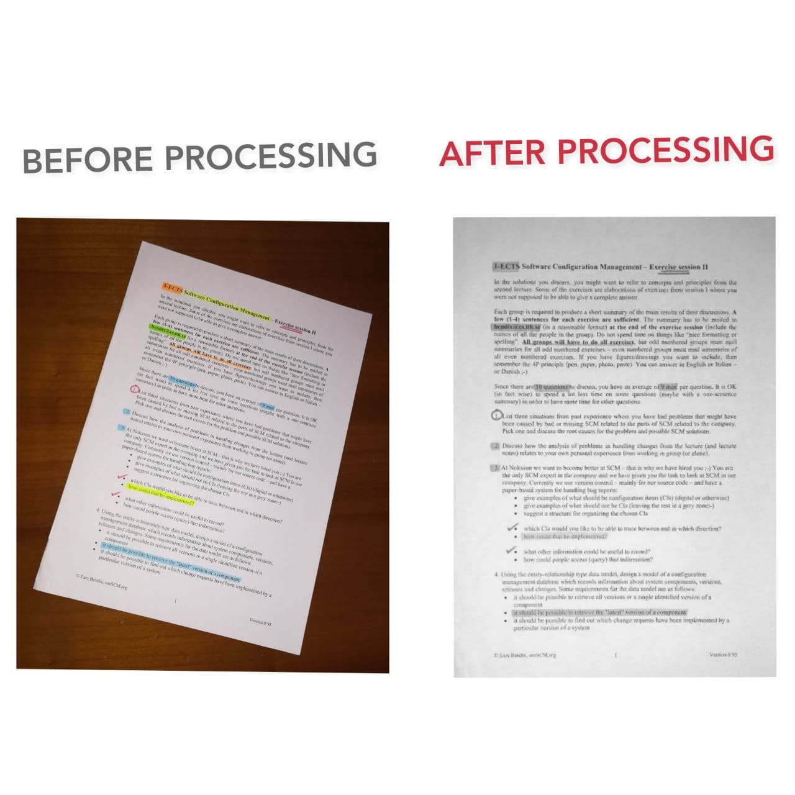

OpenCV
Multiplatform Library
L'applicativo permette di ricevere in input la foto di una superficie contenente una pagina (documento generico) e restituire in output il documento scannerizzato. Dunque viene innanzitutto identificata la pagina sulla superficie, successivamente ne vengono delimitati i bordi in modo da avere a disposizione solo la regione di interesse ed infine l'area contornata viene ritagliata e convertita in bianco e nero per ottenere come risultato finale il documento scannerizzato.
Il funzionamento dell'applicativo è stato realizzato in C++ attraverso l'utilizzo della libreria OpenCV dedicata alla visione artificiale in tempo reale. I punti deboli dell'applicativo sono la mancanza di un interfaccia grafica che permetta una migliore interazione con l'utente.